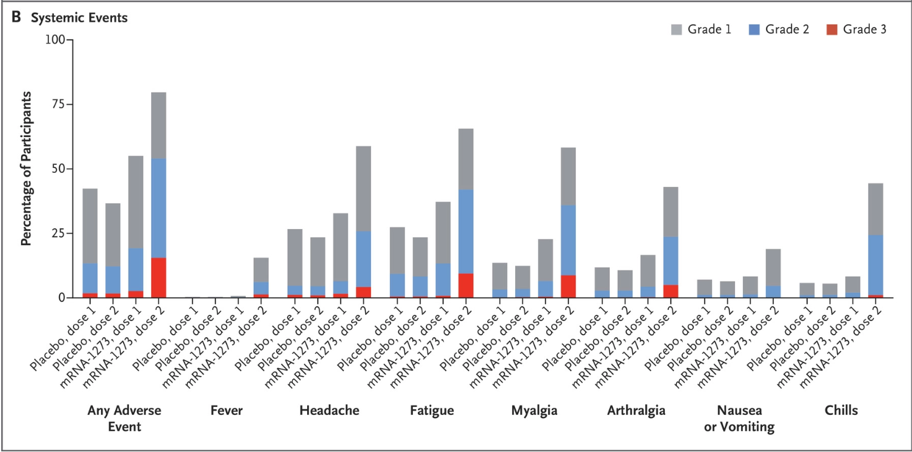
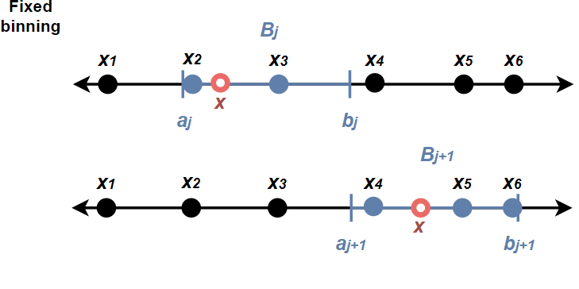
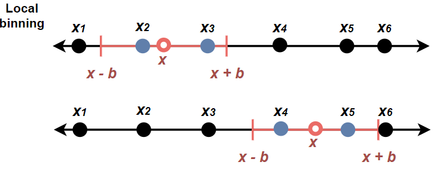
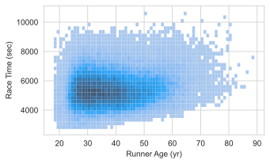
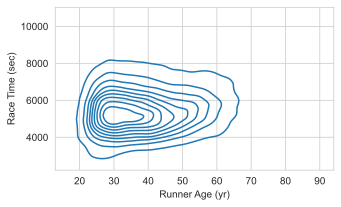

| PM25_mean | City | State | Year | |
|---|---|---|---|---|
| 0 | 8.6 | Aberdeen | SD | 2000 |
| 1 | 8.6 | Aberdeen | SD | 2001 |
| 2 | 7.9 | Aberdeen | SD | 2002 |
| 3 | 8.4 | Aberdeen | SD | 2003 |
The term and spirit of exploratory data analysis (EDA) is attributed to John Tukey, whose philosophically-leaning work in statistics in the 1960’s and 1970’s stressed the need for more data-driven methods.
For a long time I have thought I was a statistician, interested in inferences from the particular to the general … All in all, I have come to feel that my central interest is in data analysis [which] is a larger and more varied field than inference. (Tukey, 1962)
EDA is an initial stage of non-inferential and largely model-free analysis aiming at understanding the structure, patterns, and particularities present in a dataset.
Experimental data usually serve the role of evidence for or against prespecified hypotheses.
\[ \text{hypothesis} \longrightarrow \text{data} \longrightarrow \text{inference} \]
For example, in vaccine efficacy trials, trial data are collected precisely to affirm or refute the hypothesis of no effect:
| Vaccine group | Placebo group |
|---|---|
| 11 cases | 185 cases |
\(\hat{P}(\text{case is in the vaccine group}) = 0.056 \quad\Longrightarrow\quad \text{evidence of effect}\)
By contrast, observational data more often serve the role of information about some phenomenon.
For example, a secondary trial target might is to assess safety by gathering observational data on side effects; for this there is no hypothesis.

The picture that most practitioners have of modern data science is that EDA precedes confirmatory data analysis (CDA).
Aside: Historically, statistics has focused on CDA – and therefore a lot of your PSTAT coursework does, too.
When you ask a question, the question focuses your attention on a specific part of your dataset and helps you decide which graphs, models, or transformations to make.
There are two basic kinds of questions that are always useful:
Variation in data is the tendency of values to change from measurement to measurement.
For example, the following observations from your mini project data are around 8 \(\mu g/m^3\), but each one is different.
| PM25_mean | City | State | Year | |
|---|---|---|---|---|
| 0 | 8.6 | Aberdeen | SD | 2000 |
| 1 | 8.6 | Aberdeen | SD | 2001 |
| 2 | 7.9 | Aberdeen | SD | 2002 |
| 3 | 8.4 | Aberdeen | SD | 2003 |
What does it mean to ask what ‘type’ of variation there is in this data?
There aren’t exact types of variation, but here are some useful questions:
(Common) Which values are most common?
(Rare) Which values are rare?
(Spread) How spread out are the values and how are they spread out?
(Shape) Are values spread out evenly or irregularly?
These questions often lead the way to more focused ones.
The following histogram shows the distribution of PM 2.5 concentrations across all 200 cities and 20 years.
It shows several statistical properties of the data related to variation:
The common values have the highest bars – values between roughly 6 and 14.
Values under 4 and over 18 are rare, accounting for under 5% of the data.
Values are concentrated between 4 and 18, but are spread from 2 to 52.
The shape is pretty even but a little more spread out to the right (“right skew”).
New question: The national standard is 12 micrograms per cubic meter. Over 1,000 measurements exceeded this. Was it just a few cities, or more widespread?
Many cities exceeded the standard at some point in time: over 70% of the cities in the dataset. So it was more widespread, but these were the worst:
City State
Hanford-Corcoran CA 20
Visalia-Porterville CA 20
Fresno CA 19
Bakersfield CA 18
Name: Years exceeding standard, dtype: int64How many cities exceed the benchmark each year? Does this change from year to year?
There are a lot of years and it’s hard to see anything with all the overlapping bars.
Visually, it’s a lot easier to distinguish overlapping lines than overlapping bars. Smoothing out the histogram produces this:
This shows that both the variation in PM 2.5 and the typical values are diminishing over time.
This gets the message across better.
And here are those outlying values:
| PM25_mean | City | State | Year | |
|---|---|---|---|---|
| 1984 | 51.2 | Fairbanks | AK | 2004 |
| 1985 | 31.3 | Fairbanks | AK | 2005 |
All of the above has amounted to exploration of the distribution of PM 2.5 values across years and cities.
Density estimates provide smooth approximations of distributions:
These are useful tools for answering questions about variation. Relative to the histogram:
From 120A, a probability density/mass function has two properties:
Histograms are almost proper density functions: they satisfy (1) but not (2).
In what follows we’re going to express the histogram mathematically as a function of data values.
This will require the use of indicator functions, which are simply functions that are 1 or 0 depending on a condition. They are denoted like this:
\[ \mathbf{1}\{\text{condition}\} = \begin{cases} 1 &\text{ if condition is true} \\ 0 &\text{ if condition is false} \end{cases} \]
The sum of an indicator gives a count of how many times the condition is met:
\[ \sum_i \mathbf{1}\{x_i > 0\} = \#\text{ of values that are positive} \]
When the bar height is a count of the number of observations in each bin, the histogram is on the count scale.
More precisely, if the values are \(x_1, \dots, x_n\), then the height of the bar for the \(j\)th bin \(B_j = (a_j, b_j]\) is: \[ \text{height}_j = \sum_{i = 1}^n \mathbf{1}\{x_i \in B_j\} \]
Bad for comparisons: the bar heights incomparable in scale whenever the bin widths and/or sample sizes differ.
A fix that ensures comparability of scale for any two histograms is to normalize heights by bin width \(b\) and sample size \(n\).
\[ \text{height}_j = \color{red}{\frac{1}{nb}} \sum_{i = 1}^n \mathbf{1}\{x_i \in B_j\} \quad\text{where}\quad b = b_j - a_j \]
Now the area under the histogram is \(\sum_j b \times \text{height}_j = 1\), so we call this a density scale histogram, because it is a valid probability density.
Kernel density estimates are local smoothings of the density scale histogram.
This can be seen by comparing the type of smooth curve we saw earlier with the density scale histogram.
Technically, KDE is a convolution filtering. We can try to understand it in more intuitive terms by developing the idea constructively from the density histogram in two steps.
The value (height) of the density scale histogram at an arbitrary point \(\color{red}{x}\) is \[ \text{hist}(\color{red}{x}) = \frac{1}{nb} \sum_{i = 1}^n \sum_{j} \mathbf{1}\{\color{red}{x} \in B_j\} \mathbf{1}\{x_i \in B_j\} \]
Here’s what those indicators do:
\[ \mathbf{1}\{\color{red}{x} \in B_j\} \quad \text{finds the right bin}\;,\quad \mathbf{1}\{x_i \in B_j\} \quad \text{picks out the data points in the bin} \]

One could do a ‘moving window’ binning by allowing the height at \(\color{red}{x}\) to be a normalization of the count in a neighborhood of \(x\) of width \(b\) rather than in one of a fixed set of bins:
\[ \text{hist}_\text{local}(\color{red}{x}) = \frac{1}{nb} \sum_{i = 1}^n \mathbf{1}\left\{|x_i - \color{red}{x}| < \frac{b}{2}\right\} \]
Let’s call this a local histogram, because the height at any point \(\color{red}{x}\) is determined relative to the exact location of \(\color{red}{x}\).

\[ \text{hist}_\text{local}(\color{red}{x}) = \frac{1}{nb} \sum_{i = 1}^n \mathbf{1}\left\{|x_i - \color{red}{x}| < \frac{b}{2}\right\} \]
\[ \text{hist}_\text{local}(\color{red}{x}) = \frac{1}{nb} \sum_{i = 1}^n \mathbf{1}\left\{|x_i - \color{red}{x}| < \frac{b}{2}\right\} \]
Here’s what that would look like with \(b = 1\) for the air quality data:
Zooming in reveals that this is still a step function:
The local histogram is in fact a density estimate with a uniform ‘kernel’: \[ \text{hist}_\text{local}(\color{red}{x}) = \frac{1}{n} \sum_{i = 1}^n \underbrace{\frac{1}{b}\mathbf{1}\left\{|x_i - \color{red}{x}| < \frac{b}{2}\right\}}_\text{kernel function} \]
Replacing the uniform kernel with a Gaussian kernel yields a smooth density estimate: \[ \hat{f}(\color{red}{x}) = \frac{1}{n} \sum_{i = 1}^n \frac{1}{b}\varphi\left(\frac{x_i - \color{red}{x}}{b}\right) \]
In effect, the KDE curve at any point \(\color{red}{x}\) is a weighted aggregation of all the data with weights proportional to their distance from \(\color{red}{x}\).
The bandwidth parameter \(b\) controls how wiggly the KDE curve is.
The choice of smoothing bandwidth can change the visual impression.
In general, a KDE can be computed with any appropriately normalized nonnegative kernel function \(K_b(\cdot)\).
\[ \hat{f}_{K_b}(\color{red}{x}) = \frac{1}{n} \sum_{i = 1}^n K_b\left(x_i - \color{red}{x}\right) \]
Other common kernel functions include:
Usually for multivariate data it’s easier to work with conditional distributions, but KDE can be generalized to estimating joint densities in \(p\) dimensions:
\[ \hat{f}_K (\mathbf{x}) = \frac{1}{n} \sum_i |\mathbf{B}|^{-1/2} K \left(\mathbf{B^{-1/2}}(\mathbf{x} - \mathbf{x}_i)\right) \]
The usual approach is to decorrelate the variates and apply a product kernel \(K(\mathbf{z}) = K_1(z_1)K_2(z_2)\cdots K_p(z_p)\) with separate bandwidths for each dimension.


Does race time seem correlated with runner’s age?